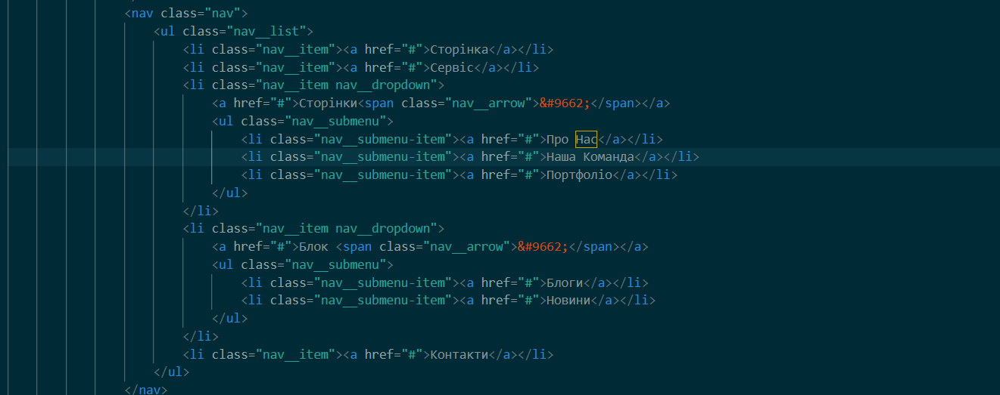
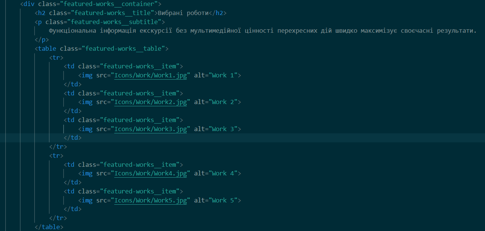
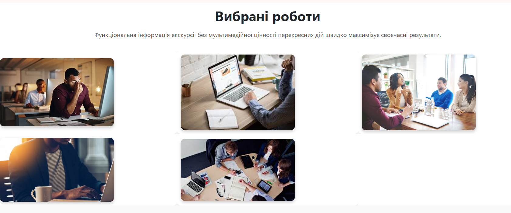

ПРЕДМЕТНЕ СЕРЕДОВИЩЕ
WEB-застосунок для управління стартап-проєктами — це сучасна цифрова
платформа, розроблена для автоматизації та оптимізації процесів планування, моніторингу та
розвитку бізнес-ідей. Основною метою застосунку є забезпечення ефективної взаємодії між
членами команди, відстеження завдань, аналізу продуктивності та управління ресурсами.
Цей сервіс значно спрощує управління стартапом на різних етапах його розвитку. Користувачі
можуть створювати проєкти, додавати учасників, розподіляти ролі та встановлювати дедлайни.
Інтерактивна дошка завдань дозволяє переглядати поточний статус робіт, визначати пріоритети
та відстежувати прогрес у реальному часі. Система також підтримує інтеграцію з інструментами
для командної роботи, такими як календарі, месенджери та сервіси для відеозв’язку.
Оформлення нових завдань та етапів розвитку проєкту виконується в кілька кліків, з
можливістю прикріплення файлів, обговорення деталей та виставлення нагадувань. Учасники
команди отримують сповіщення про важливі оновлення, можуть коментувати зміни та пропонувати
свої ідеї.
Адміністративна панель надає широкі можливості для контролю за проєктами. Керівники можуть
аналізувати ефективність роботи команди, відстежувати виконання завдань, контролювати бюджет
та налаштовувати права доступу. Вбудовані аналітичні інструменти дозволяють оцінювати
динаміку розвитку проєкту, прогнозувати ризики та оптимізувати стратегію розвитку.
Система має високий рівень безпеки, включаючи захищене зберігання даних та механізми
автентифікації користувачів. Усі файли та конфіденційна інформація захищені сучасними
методами шифрування, що гарантує безпечну роботу з комерційними та інвестиційними даними.
WEB-застосунок підтримує можливість розширення функціоналу, що дозволяє додавати нові
модулі, такі як штучний інтелект для прогнозування тенденцій ринку, автоматизовані звіти або
інструменти для роботи з інвесторами. Завдяки сучасним технологіям ця система покращує
управління стартапами, підвищує ефективність роботи команд та сприяє успішному запуску та
масштабуванню бізнес-ідей.
БІЗНЕС - ЛОГІКА
Функціональні вимоги:
- Система реєстрації та авторизації користувачів:
- Реєстрація через email.
- Вхід та відновлення пароля.
- Персональний кабінет користувача:
- Можливість переглядати особисту інформацію.
- Оновлення профілю та налаштувань облікового запису.
- Каталог послуг і рішень для стартапів:
- Опис послуг, що надаються (консультації, маркетинг, розробка).
- Фільтрація за категоріями, ціною та типом послуг.
- Детальні сторінки стартапів та послуг:
- Фото, відео, кейс-стаді та відгуки.
- Документація та бізнес-плани.
- Кошик та оформлення замовлення на послуги:
- Додавання послуг у кошик.
- Оформлення замовлення для старту співпраці.
- Автоматичний розрахунок суми співпраці:
- Оцінка вартості послуг в залежності від обраних опцій.
- Система оплати:
- Можливість оплати онлайн за допомогою банківських карток та систем, таких як PayPal.
- Оплата при отриманні послуг.
- Адміністративна панель:
- Додавання нових послуг, оновлення стартапів.
- Створення та управління акаунтами користувачів.
- Перегляд статистики відвідувань та продажів послуг.
- Безпека:
- Захист персональних даних користувачів.
- Шифрування інформації при онлайн-оплаті.
- Масштабованість:
- Підтримка великої кількості користувачів і стартапів.
- Гнучкість у додаванні нових послуг та проектів.
- Продуктивність:
- Швидке завантаження сторінок.
- Швидка обробка запитів користувачів та замовлень.
- Адаптивний дизайн:
- Оптимізація для мобільних пристроїв і планшетів.
- Підтримка різних браузерів.
- Зовнішні платіжні сервіси:
- Інтеграція з популярними платіжними системами (Stripe, PayPal).
- Аналітика:
- Відстеження відвідуваності та користувацької активності.
- Аналітика по успішності стартапів і популярності послуг.
Тема, мета, місце розташування WEB-застосунка та місце звітного HTML-документу
Тема: СТРУКТУРА HTML-ДОКУМЕНТА. ВИБІР ПРЕДМЕТНОЇ ГАЛУЗІ. GitHub. РОБОТА З РЕПОЗИТОРІЯМИ. ОСНОВНІ ТЕГИ ТА АТРИБУТИ в HTML-ДОКУМЕНТІ.
Мета: Придбати практичні навички роботи з GitHub, репозиторіями, HTML-документом, таблицями, зображеннями, посиланнями, списками, формами. Створити шаблон звітного HTML-документом для відображення результатів роботи всіх лабораторних робіт.
- Посилання на репозиторій власного WEB-застосунку
- Посилання на репозиторій на живу сторінку власного WEB-застосунку
- Посилання на репозиторій звітного HTML-документа
- Посилання на репозиторій на живу сторінку звітного HTML-документу
- Посилання на репозиторій з самостійними роботами
- Посилання на репозиторій живу сторінку з самостійними роботами
СТРУКТУРА ДОКУМЕНТА
Код списку
Зображення
Інформація
Тег <ul> (невпорядкований список) використовується для створення списку елементів, де порядок елементів не важливий. Кожен елемент списку визначається за допомогою тегу <li>. Цей тег часто застосовується, коли ви хочете створити список без нумерації. Тег <ol> (упорядкований список) створює список елементів з чіткою нумерацією або іншими маркерами (наприклад, літерами або римськими цифрами). Як і в <ul>, елементи списку визначаються тегом <li>. Приклад: <ul> <li>Пункт 1<li> <li>Пункт 2<li> <ul>
Код зображення
Зображення
Інформація
Тег <img> використовується для вставлення зображень на веб-сторінку. Атрибут src визначає джерело зображення (посилання на файл або URL), а атрибут alt надає альтернативний текст, що відображається, якщо зображення не може бути завантажене. Тег <img> є самозакриваючим і не потребує парного тегу. Для кращої доступності та SEO важливо додавати атрибут alt, що описує вміст зображення. Приклад: <img src="image.jpg" alt="Опис зображення">
Код таблиці
Зображення
Інформація
Тег <table> використовується для створення таблиць. Таблиця складається з декількох
елементів:
<tr> — тег для рядка таблиці.
<td> — тег для клітинки таблиці.
<th> — тег для заголовка клітинки таблиці, зазвичай використовується для визначення
заголовків
стовпців або рядків.
Таблиці є дуже корисними для представлення структурованих даних у вигляді рядків та
стовпців.